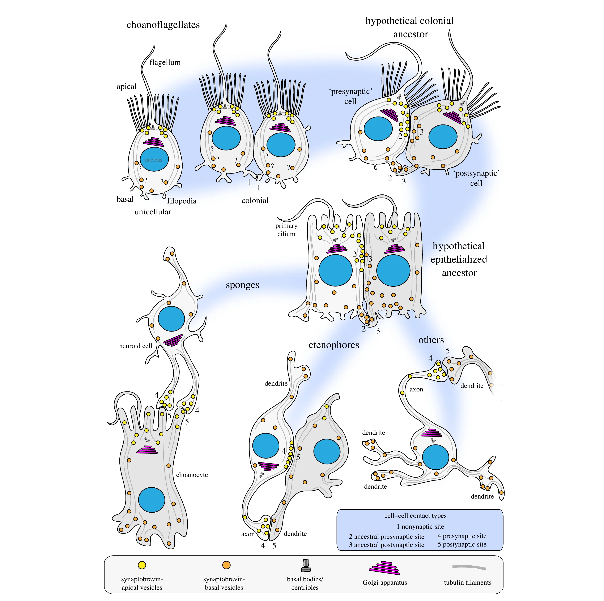

シドニーの海を潜りながら、テニスボールほどのタコに出会う哲学者がいる。彼が指を一本差し出すと、タコの腕がゆっくりとほどけて伸びてきて、吸盤が指を掴む。数十の吸盤の一つ一つに、数百のセンサーがあり、腕は指を「味わい」ながら、そっと引き寄せている。
この哲学者、ピーター・ゴッドフリー＝スミスは、シドニーの海に通い続けてタコとコウイカ（cuttlefish）を観察しながら、心の起源を考えた（『タコの心身問題』原題 Other Minds、2016、続編『メタゾア』2020）。前号の末尾で、生き物の内側もまた集団知性に溢れているのではないか、と書いた。今回と次回は、この問いを二回に分けて、彼の著作とともに深掘ってみたい。そもそも神経系とは、何なのか。
本連載で確認してきたように、単細胞の生き物たちは互いを化学物質で感知し合っている。たとえば、ハワイのダンゴイカに棲む発光細菌で、この分子を感知するほど多く分子を作り、仲間が十分いるときにだけ、いっせいに光る（第2章）。前号の粘菌が集合に使った cAMP も、まさにこの種の「あいだの通信」だった。
ゴッドフリー＝スミスによれば、多細胞が生じたのは、分裂したあとの細胞同士が離れそこねたことから始まったという。離れそこねた細胞にとって、「環境」は大部分が他の細胞になる。すると、外の環境を感知するための手段が、そのまま、同胞たちが何を「言って」いるかを感知する手段になったのだ。あいだの通信は、消えたのではない。境界が動いたことで内側の通信に変わったのだ。群れが体になった瞬間である。
もっとも、糊でくっついた細胞の塊が体であるためには、調整が要る。そしてこの調整は、二つの時間尺度で働く。遅い方は、体そのものを作る仕事だ。細胞どうしが信号を送り合って、どこが前でどこが後ろか、どの細胞が何になるかを決めていく（これは植物にもある）。速い方は、できあがった体を動かす仕事である。「ごく一部を除くすべての動物で、いくつかの細胞のあいだの化学的相互作用が、神経系の基盤になる。そしてそのうちのいくつかでは、そうした細胞の塊が集まり、転用された信号の化学電気的な嵐の中で火花を散らして、脳になる」（第2章）。
なぜ化学信号だけでなく、電気信号、つまり神経系も生じたのか。素材となる「ほとんどのシナプスタンパク質は、シナプスの起源より前に進化していた」（Burkhardt, J Exp Biol, 2015）という。神経を構成するニューロン自体も細胞であるが、電位依存性のイオンチャネルは、およそ30億年前の細菌に現れて以来、あらゆる生物にある。現に、神経伝達物質を放出する装置も、受け取る側の足場タンパク質も、動物に最も近い単細胞生物である襟鞭毛虫（Choanoflagellate）が持っている。シナプスを持つ動物だけに限られる分子は、ごくわずかしかない。その代表が接着分子だが、これもあらゆる生物が持つ酵素の親戚で、酵素として働く力を失った代わりに、手を握る役を得たものだという。

出典:Göhde R. et al. (2021)「Choanoflagellates and the ancestry of neurosecretory vesicles」Phil. Trans. R. Soc. B 376: 20190759, Figure 4 より。CC BY 4.0

ただ、素材があるだけでは神経系が生じた理由には足りない（タンパク質があることと生命が誕生したことの間に飛躍があるように）。なぜ生まれたのか。長らく自明とされてきた答えは、感覚運動説である。神経系は、感じることと動くことのあいだを橋渡しするために生まれた、という見方だ。外で何かが起きるのを感じて、それに応じて動く。その「感じる」と「動く」を繋ぐものが神経だと。だが、これは行為できることを前提してしまってはいまいか。単細胞の生き物にとって「動く」は一つの出来事だが、細胞の塊にとって、動くことは達成に近いものになる。これは何人もの漕ぎ手が乗った舟に近いものがある。タイミングが揃わなければ、舟はどこへも進まないのである。誰かが「せーの」と掛け声をかける必要がある。神経系はまず、そのためにあったのではないか。これは行為形成説（action-shaping view）と呼ばれる。
ゴッドフリー＝スミス自身は、どちらかに与するのではなく、どちらも必要だと考える。舟で掛け声をかける舵手（コックス）は漕がないが、ミクロな行為の協調をとりながら、同時に、舟がどこへ向かっているかを見ている。神経系も内側の協調を見ながら、外側の出来事を感じている。ただし進化史的には「おそらく、ごく最初の神経系は主として行為を協調させるのに役立った。…だが、そのような時代があったとしても、カンブリア紀にはそれは終わっていた」だろう。外敵に応答しないことは捕食されることを意味するようになったからだ。
これは神経系を維持する十分すぎる理由だろう。実際、「ニューロンを動かし維持するには大量のエネルギーが要る。その電気的痙攣を作り出すのは、バッテリーを毎秒何百回も充電しては放電するようなもの」なのだが、行為を組織し、世界に応答すること、そのどちらも生存には欠かせないのである。ニューロンの鳴り止まないおしゃべりは、集合しっぱなしになった群れの、いまも続く会話なのだ。
こうなってくると、むしろ内側と外側を区別できることが不思議に思えてくる。外を「感じる」とは一体どういうことなのだろうか。動く動物には、動くがゆえの課題がある。自らの行為が、感覚する内容を変化させてしまうのだ。『メタゾア』でゴッドフリー＝スミスが挙げるのは、テッポウエビの触角である。体長の数倍もある触角は、自分がうろつくだけで、始終なにかにぶつかる。そこでエビは、いま自分がしていることから予期される感覚の変化を割り出し、それを超えたぶんだけを「外で何かが起きたしるし」として拾うのである。自己と世界の境界は、こうした仕分けの結果として、初めて生まれるのだ。私たちの目も同じで、視線を動かしても世界が動いて見えないのは、行為の指令の「写し（efference copy）」を知覚系に送り、自己起因のぶんを差し引いているからである。
つまり、環境を感知するということは、感知している環境の「写し」を内側に持つことなのだ。その「写し」は、自ら動いた場合にどう刺激が変わるかという予測も含まれている。ゴッドフリー＝スミスはここに「主観」の萌芽を見ている。自らの行為の結果をシミュレーションできるということだからである。これは正直驚きだ。知覚して応答できるということこそが、主観を持つことなのだとしたら、ミジンコにはミジンコの、植物には植物なりの主観があるということではないだろうか。
さて、人が言語を習得するのも、同じ原理だとしたらどうだろうか。ヴィゴツキーが述べたように、子供は他人との会話という「あいだの通信」を、内言に変えて自らのものにする。ふだん意識しないが、発話は出力であると同時に入力だ。言葉という外界の刺激と同じ発話をすることができるようになると、やがて声に出さなくても、頭の中で文が「聞こえる」。話す指令を組むとき、その指令の「写し（efference copy）」が、かすかな聴覚像を生むからだ。こうして組み上がった内なる文は、耳で聞いた文と同種の処理にさらされる。これがやがて思考の道具となるのは想像に難くない。新しいプラグマティズムの議論を持ち出さずとも、ここまで来れば、われわれが普段「知能」と呼ぶものまでの道のりが一本の線で見えるのではないだろうか。
プロジェクトを知能と捉える観点も、ここから大きくは外れていない。チームが育つとは何だろうか。それは細胞の「あいだの信号」が内部に移ったように、個人の「あいだ」のやり取りが内側になることに他ならない。内側になるということは、外側の信号と区別できるということであり、それはチームとして動いた結果を予測するような環境の「写し」を得ることに他ならず、すなわちチームの「主観」を育てることなのではないだろうか。そしてそれは、喃語の発声と同じように、行為にならない行為を繰り返して結果を見ることで習得されていく「写し（efference copy）」に支えられているはずである。
冒頭のタコの話に至る前に、だいぶ紙面を使ってしまった。ゴッドフリー＝スミスが「他なる知性（Other Minds）」と呼ぶように、実はタコの知性は人間のそれとは大きく異なっている。ニューロンの過半数を、脳ではなく八本の腕に置いた動物。次回は、ゴッドフリー＝スミスを持ち越して深掘ってみたい。